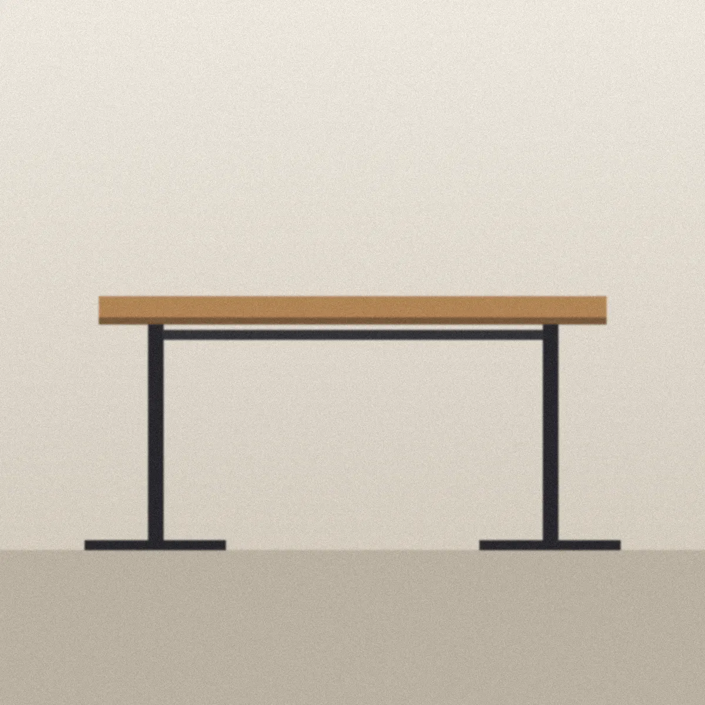
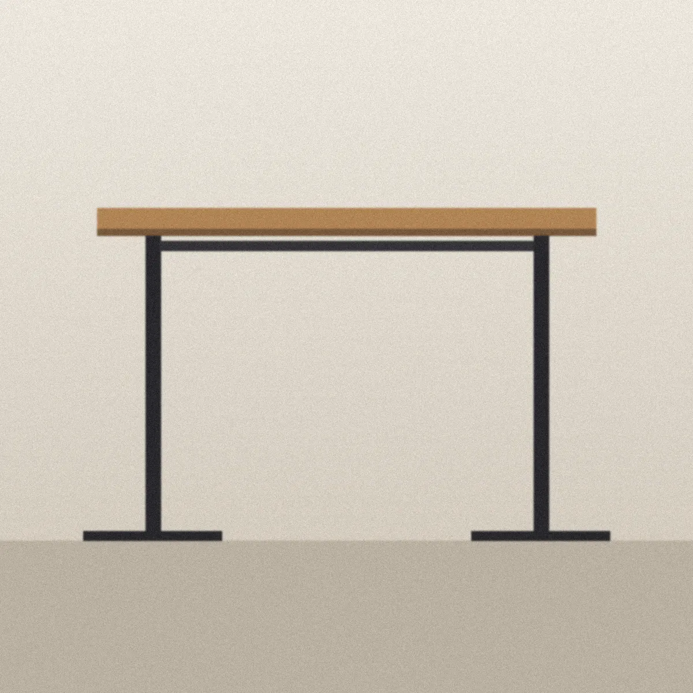
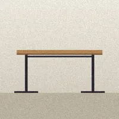
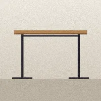
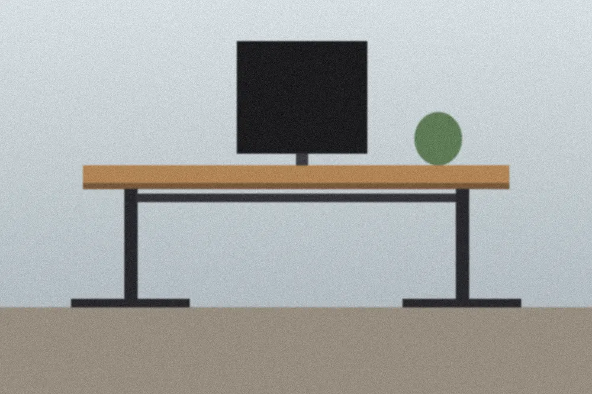
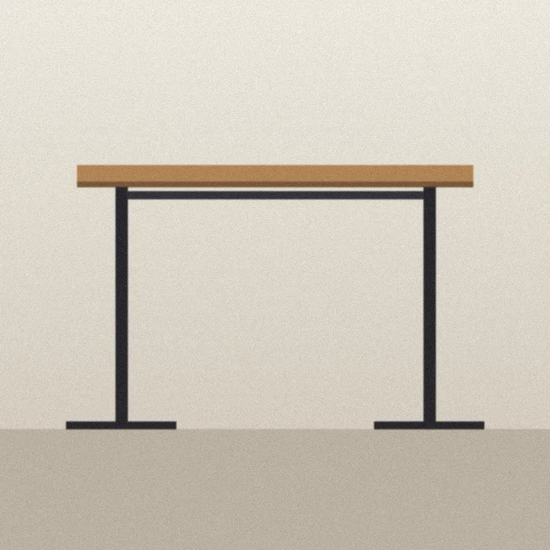

Loft Standing Desk, 60 in
$849.00
What owners say
★★★★★ 4.8 · sample rating
Sample review content for the demo. Not real customers.
The Loft is a dual-motor standing desk with an oak-veneer top. It moves from 25 to 50 inches in about twenty seconds and remembers four heights, so switching between sitting and standing is one button, not a routine.
- Desktop
- 60 × 30 in
- Height range
- 25–50 in, four programmable presets
- Top
- Oak veneer, 1 in thick
- Frame
- Powder-coated steel
- Motors
- Dual, 300 lb lift capacity
- Warranty
- 10 years
In the room

